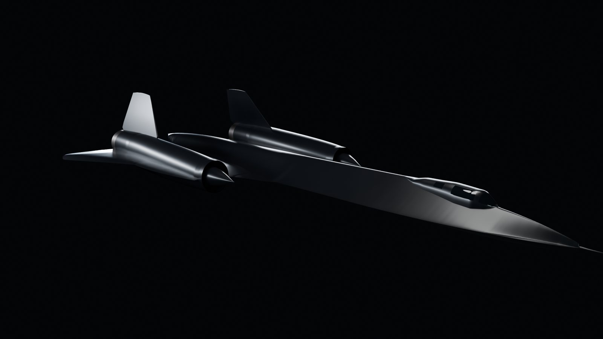
Hero
The opening view of the live viewer.
A free, ad-free archive of the Lockheed A-12, YF-12, M-21 and SR-71. It collects the best public photographs, documents and records, credits every one, and presents them with Astro and Three.js. The name comes from the CIA's designation for the first A-12 airframe, 60-6924.
The model is live on The Machine page as "Exhibit 3D": an interactive view you can turn and zoom, with six set views and labels that jump to the inlet, cockpit, J58 and heat sections. It is lit with a CC0 studio environment (Greg Zaal, Poly Haven) plus softbox and rim lights, and a Cycles render from the same camera shows while it loads. Open it at preview.article121.com/machine/.

The opening view of the live viewer.
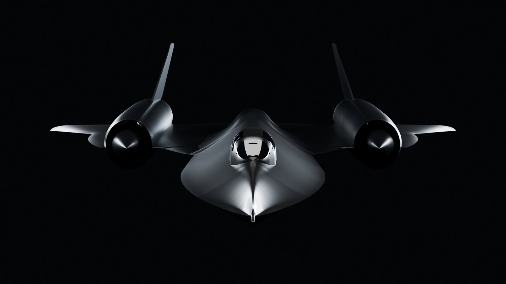
The view of the Smithsonian's Exhibit A photograph.
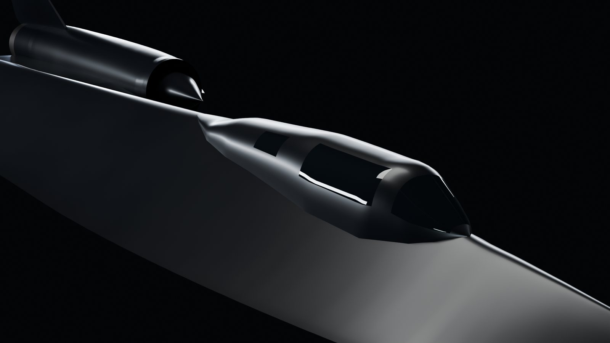
Windshield panes and side windows in glass, frames painted.
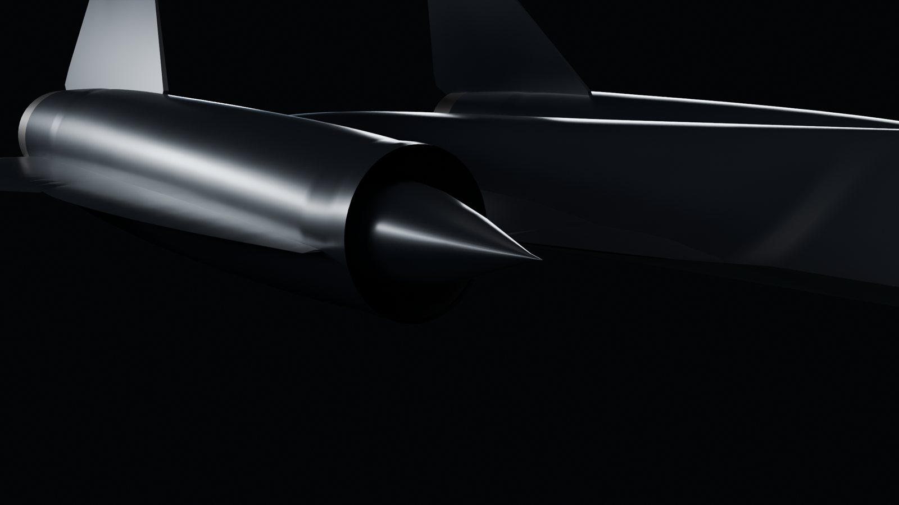
Spike, cowl lip and the duct behind it.
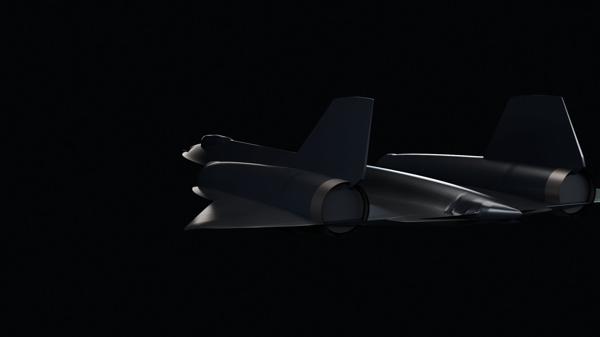
Ejectors in heat-stained metal; the tail cone.
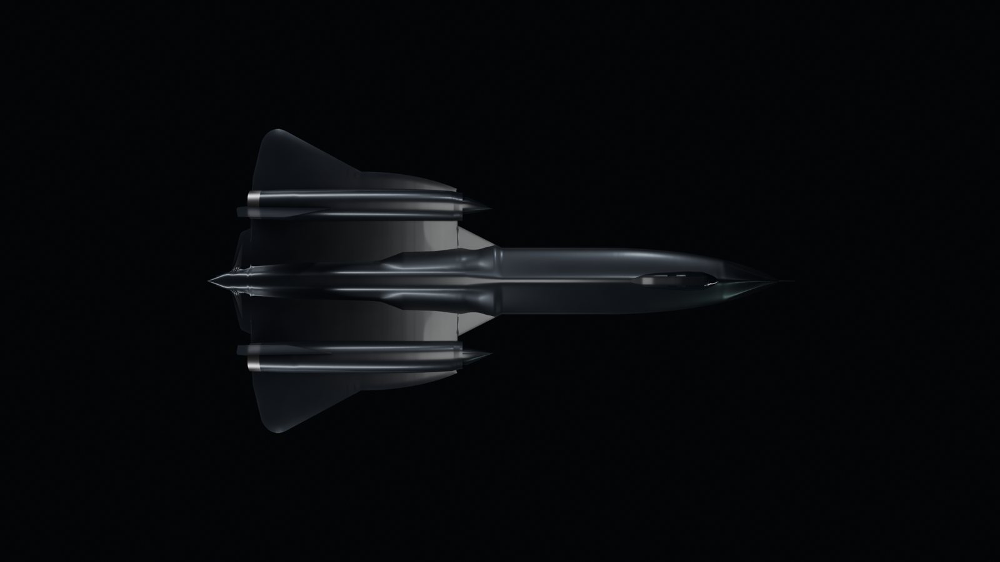
Chines, wing and nacelles from above.
The outline is lofted from NASA Dryden's vector three-view of the SR-71A (EG-0075-02), put on true scale with NASA's own fuselage stations (nose FS 102, tail cone FS 1355, NASA TM-4749). Calibrated that way, the drawing's span comes out at 16.959 m against the published 16.947 m, an error of 0.07 percent. The script, the traced data and every source are in the repository, so anyone can rebuild it or check it.
| View | Overlap with NASA's drawing | Average gap | 95% of the outline within |
|---|---|---|---|
| Plan | 97.6% | 6.7 cm | 38 cm |
| Side | 95.4% | 5.9 cm | 17 cm |
| Front | 56% | 17 cm | 41 cm |
The first pass had the outline right but guessed the shape in between. This pass takes the sections from a Lockheed section sheet (a Lockheed-style lines drawing posted on sr71.us as "Figure 71" since 2002; a search of NASA, DTIC, CIA and National Archives holdings found no government copy, so its origin is still undocumented). What it shows, and what the model now does:
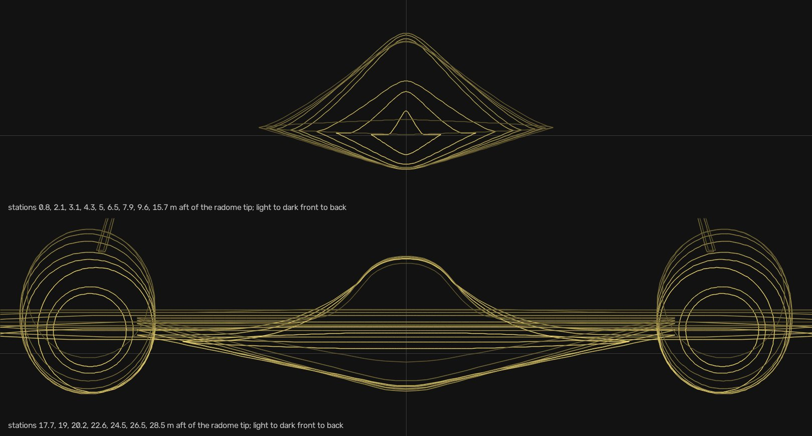
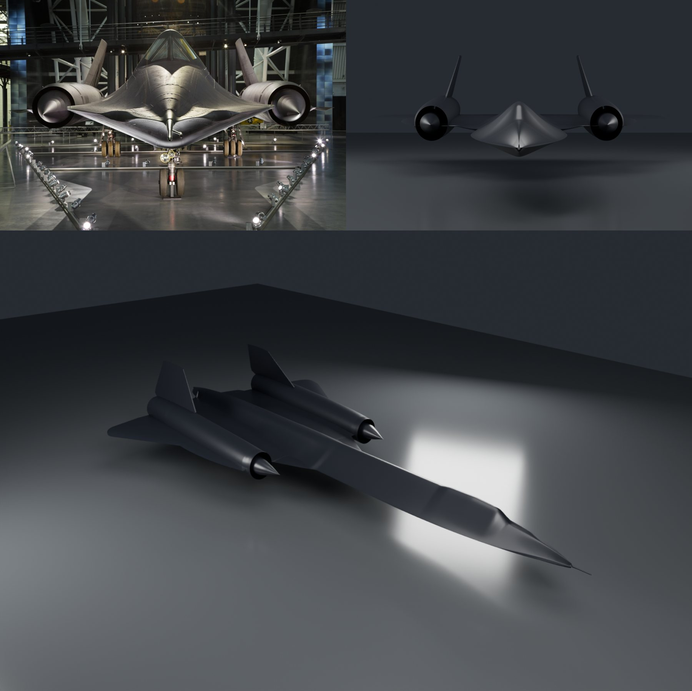
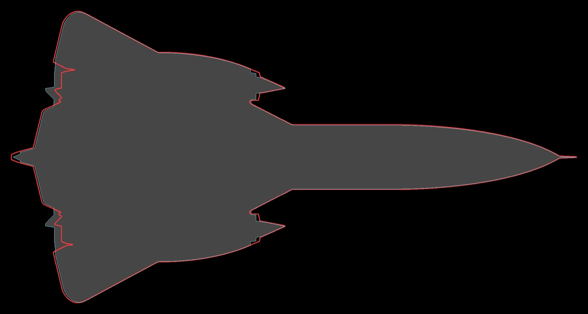
Model in grey, NASA outline in red. The only visible gap is the aft end of the nacelles.
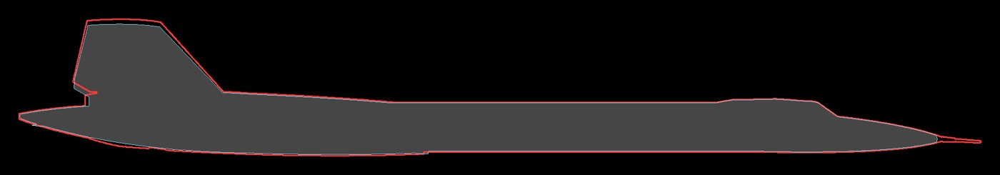
The red line past the nose is the drawing's pitot probe, drawn 1.44 m long; the real one is 0.91 m.
You asked for real high-end photographs over 3D that was not close enough to the real aircraft, the classified feel as the identity of the site, a register where you can pick any airframe that was built and read its history, and a darker, sleeker finish like the aircraft itself. Both pages below are live.
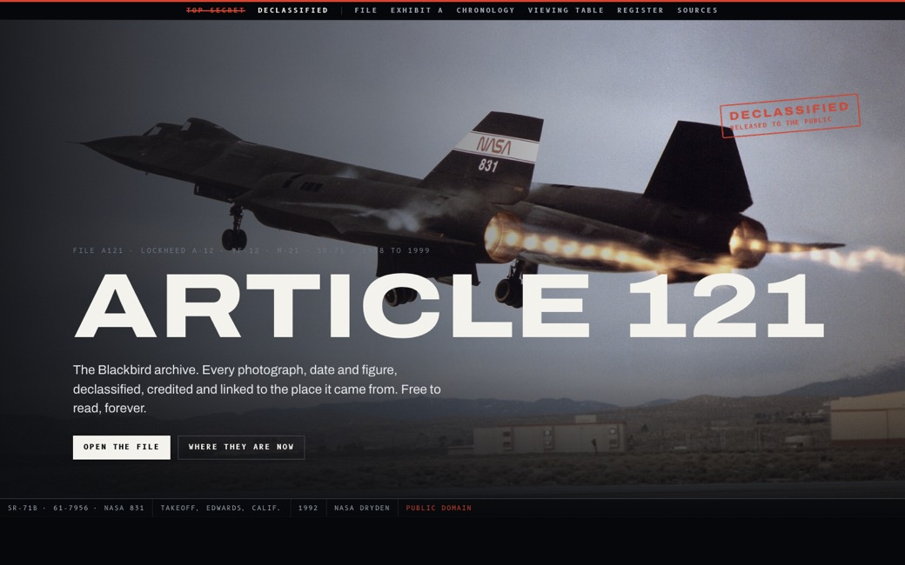
Opens on a full-bleed photograph with the title unredacted on load. A black folder with red cover-sheet borders opens in 3D as you reach it. Exhibit A is a full-resolution print you inspect with a photo interpreter's loupe; the chronology is a ledger; the viewing table opens any photograph full screen with zoom.
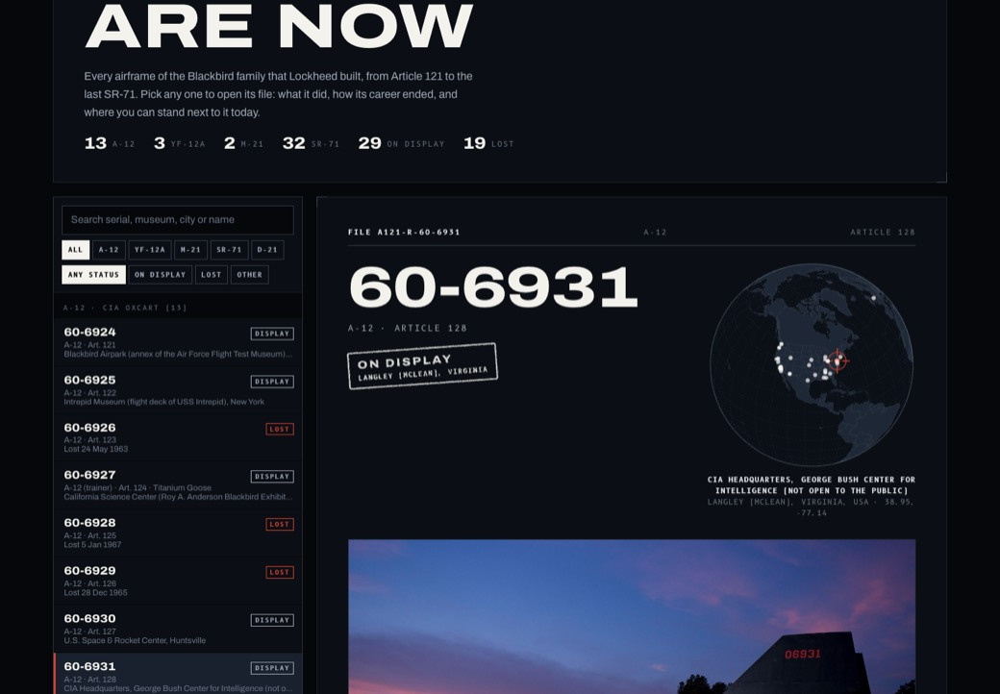
All 51 records in a card index: every A-12, YF-12A, M-21 and SR-71, plus the D-21 drones. Pick one to open its file: photos, record card, career, how it was lost or where it stands today, chronology, disputes between sources, and every source. A globe turns to its museum.
Round 2 was the same case file in light manila and bond paper: open the light case file. Round 1 was these three directions:
Each prototype is a live page with working 3D and animation, built from the same placeholder aircraft model and the same public-domain photos. Open them on a laptop for the full effect; all three also work on a phone.
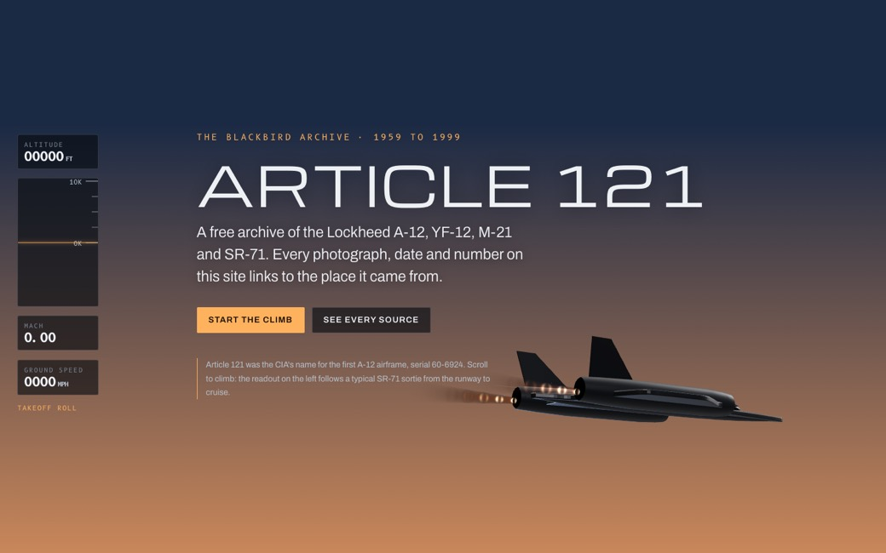
Scroll is altitude. A 3D Blackbird climbs from a twilight runway to 85,000 ft while a cockpit-style readout tracks altitude, Mach and ground speed. The sky turns black and the stars come out at cruise.
Strongest for the home page and story chapters.
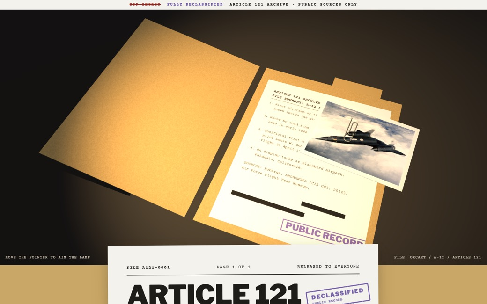
The archive as a released case file. A 3D folder opens on a desk under a lamp you aim with the pointer. Redactions lift as you read. Photos are clipped prints with full provenance. Dark mode is a microfilm reader.
Strongest for documents, the CIA years and the photo archive.
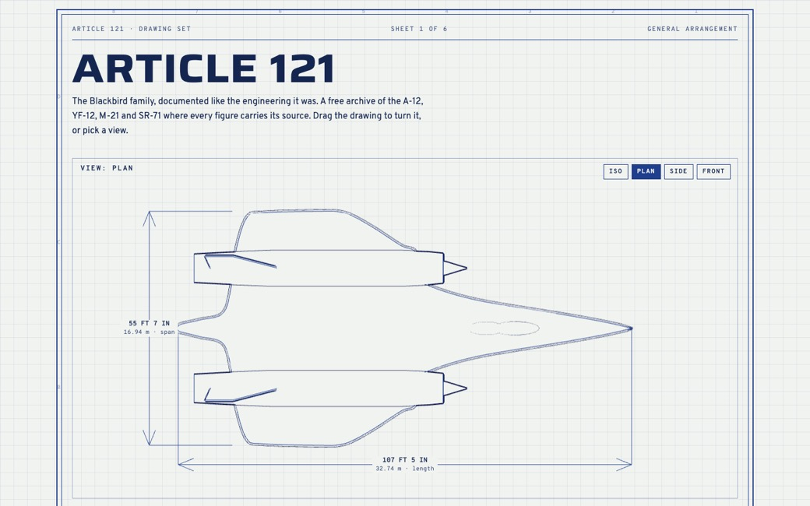
Engineering drawings. The aircraft as live line work that turns through plan, side and front views with true dimensions and a real on-screen scale, plus a working J58 inlet explainer. Whiteprint by day, blueprint by night.
Strongest for the engineering pages and the airframe register.
Round 1 recommendation, now superseded: use A as the site's shell and home page, C's drawing language for the engineering section and register, and B's case-file treatment for the documents room. Shared type, colour tokens and navigation keep it one site, like rooms in one museum. If you would rather commit to a single look, choose A.
| Section | What it holds | Signature interaction |
|---|---|---|
| Home | The case file: mission, summary, exhibits, entry points | Folder opening, Exhibit A loupe |
| Timeline | Every dated event from the U-2 shootdown to NASA's last flight and the museum era | Zoomable multi-lane timeline |
| Programs | Archangel, OXCART, KEDLOCK, TAGBOARD, SENIOR BOWL, SENIOR CROWN, NASA | Program pages with their own timelines |
| Register | Where they are now: a file for every airframe built, with history, photos and fate | Card index and globe (prototype built) |
| The Machine | Airframe, titanium, J58, JP-7, inlet, navigation, suits | 3D exploded view, inlet simulator |
| Missions | Publicly documented operations and record flights | Animated route maps |
| People | Skunk Works engineers, crews, ground crews, with oral histories | Crew and airframe cross-links |
| Archive | Photographs and film, full resolution | Deep zoom with provenance panel |
| Documents | Declassified CIA, NRO and USAF records, manuals, NASA papers | Reader with linked passages |
| Sources | Every source, its rights status and archive copy | Filter by archive and licence |
These are where the animation budget goes. Everything else stays fast and quiet so the photographs carry the site.
The folder opens on the desk, redactions lift as you read, and Exhibit A can be inspected with a loupe at full resolution.
One zoomable track across 1956 to 1999 with a lane per program. Drag to scrub, pinch to zoom, click any mark for the cited entry and photos.
Every airframe built, its story and its fate, in a card index. A globe turns to each survivor's museum. Built in round 2.
The J58 inlet explainer from round 1, cutaway drawings and photographs of the engine. A 3D aircraft only once a model matches the real one.
The 6 March 1990 Los Angeles to Washington run replayed on a map at true pace, compressed against an airliner flying the same route.
Full-resolution scans you can zoom into rivet by rivet, each with its creator, date, catalogue number and licence.
Sources are records in their own right. Every event, airframe and photo points at one or more of them, and the build fails if any entry has none. Readers see a numbered marker on each claim that opens the source, and a credit line on every image.
flowchart LR A[Archive or document] --> B[Source record
title, publisher, URL, rights] B --> C[Content entry
event, airframe, photo] C --> D{Build checks} D -- at least one source --> E[Published page] D -- weekly link check --> F[Broken link report] D -- snapshot --> W[Wayback Machine copy] E --> G[Markers, credit lines,
source drawer] G --> H[Reader reports an error] H -- GitHub issue form --> C
// src/content.config.ts (Astro 7)
const events = defineCollection({
loader: glob({ pattern: '**/*.md', base: './content/events' }),
schema: z.object({
date: z.string(), // 1962-04-25, 1962-04 or 1962
precision: z.enum(['day', 'month', 'year', 'approx']),
title: z.string(),
program: z.enum(['oxcart', 'kedlock', 'tagboard', 'senior-bowl', 'senior-crown', 'nasa', 'context']),
airframes: z.array(reference('airframes')).default([]),
sources: z.array(reference('sources')).min(1), // no source, no build
}),
});Most of the best material is U.S. government work and therefore public domain. Every archive below was checked today, and the ones with public APIs were queried directly.
| Archive | What it holds | Rights | Access |
|---|---|---|---|
| Smithsonian Open Access | 10 master scans of 61-7972, up to 8,688 by 5,792 px and a 10,950 px panorama | CC0 | API, free key |
| NASA Image Library | About 50 Dryden SR-71 images, plus YF-12 and LASRE, full-size masters | Public domain | API, no key |
| NASA Dryden gallery (Wayback) | The retired gallery with original captions, and SR-71 and YF-12 film clips found nowhere else | Public domain | Wayback copies |
| CIA reading room and CSI | OXCART histories (Robarge, McIninch), declassified files, CIA Museum photos | Public domain | Direct download |
| National Archives | DoD stills, USAF and NASA films, CIA and NRO records | Mostly public domain | API, free key |
| DVIDS | Beale AFB and 9th Reconnaissance Wing heritage imagery | Public domain | API, free key |
| Wikimedia Commons | About 690 SR-71, 218 A-12, 97 D-21 and 94 J58 files, with per-airframe categories | Per file | API |
| Library of Congress | 303 SR-71 photos, some marked no known restrictions | Per item | API, no key |
| San Diego Air & Space Museum | Flickr Commons sets including donated crew collections | No known restrictions | Flickr API |
| Internet Archive | The declassified SR-71 flight manual, NTIS films, the CIA A-12 file bundle | Verify per item | API, no key |
| National Museum of the USAF | Fact sheets and photos for SR-71A, YF-12A and D-21B | Public domain | By hand; blocks scripts |
Rights decide what the site may host, so every asset is sorted into one of four tiers and the tier is stored with it:
| Tier | Covers | What we do |
|---|---|---|
| A · Mirror | U.S. government works, CC0, no known restrictions | Host the full-resolution master and credit the creator anyway |
| B · Mirror under licence | CC BY, CC BY-SA, GPL models | Host with the full credit and licence link the licence requires |
| C · Link only | Copyrighted photos, fan-site pages, Lockheed Martin material, books | Link to it and to a Wayback copy; summarise in our own words |
| D · Permission | Old fan sites, crew collections, museum archives, private scans | Ask in writing; host only after a yes, within what was granted |
Two traps the research turned up: a photo on a government website is not automatically a government photo (check for "courtesy Lockheed"), and declassified does not mean public domain when a contractor wrote the document. The site will not lean on fair use for images.
A first research pass built the fact pack the site will start from: 109 dated events and 51 airframe records, each with at least one source, plus notes on every place the sources disagree. It is in the repo under research/. A few things it caught that the site will not repeat:
| Often said | What the sources show |
|---|---|
| The SR-71 holds the absolute altitude record | Its 85,069 ft is the record for sustained horizontal flight. The absolute jet altitude record is a MiG-25 derivative's 1977 zoom climb. |
| Nobody died flying a Blackbird | Jim Zwayer, Walt Ray, Jack Weeks and Ray Torick did. |
| President Johnson garbled RS-71 into SR-71 | The official transcript of his 24 July 1964 news conference reads SR-71. |
| 4,000 missiles were fired at it | Air Force sources give both 1,000 and 4,000, and neither publishes a count. |
| The Blackbirds overflew the Soviet Union | The CIA says the A-12 never did, and satellites had taken over that job by the time the SR-71 was operational. |
| Article 121 first flew on one known date | Print gives 24, 25 and 26 April 1962 for the unofficial first hop; the official first flight was 30 April. |
| Layer | Choice | Why |
|---|---|---|
| Site | Astro 7.3, static output | Content collections with schemas enforce the citation rule; built-in AVIF and WebP images; zero JavaScript on pages that do not need it |
| 3D | Three.js r186, WebGLRenderer | Mature, fast on phones; WebGPU is still optional. Models as glTF with meshopt and KTX2 compression |
| Motion | GSAP 3.15 with ScrollTrigger, Lenis | Free for every use since 2025; precise scroll choreography. CSS scroll-driven animation where browsers support it |
| Search | Pagefind 1.5 | Full-text search with no server |
| Deep zoom | OpenSeadragon 6.1 | Tiles generated with libvips at build time |
| Maps | MapLibre GL 6.12 with PMTiles | No API keys and no per-view fees |
| Hosting | Cloudflare Workers static assets | Free, unlimited static requests, 20,000 files per deploy |
| Large files | Cloudflare R2 | Originals, tiles and models. 10 GB free, then $0.015 per GB a month, no egress fees |
| CI | GitHub Actions | Build and schema checks on every pull request, weekly link check with lychee, Wayback capture, deploy on merge |
| Running cost | Estimate |
|---|---|
| Domain, article121.com | about $11 a year |
| Hosting and bandwidth | $0 |
| R2 storage at 20 GB of originals | about $0.15 a month |
Pick a direction, register article121.com, publish the repo with this plan and the prototypes.
Astro project, design tokens from the chosen direction, content schemas with the citation rule, CI and deploy. A live skeleton on the domain.
Ingest scripts for the public archives, the source register, the full airframe register and the master timeline, all validated.
The case-file home, the Register, the Timeline, the light table with deep zoom, and The Machine.
Documents reader, missions, people, deep-zoom archive, and permission requests to the legacy fan sites.
Accessibility audit, performance budgets, reduced-motion paths, share cards, then announce.
The classified case file, dark and sleek, led by photographs. Next: your notes on the two round 3 pages.
Your personal account to start. A dedicated organisation later makes it easy to add co-maintainers.
CC BY-SA 4.0 for writing keeps it open and compatible with Wikipedia. CC0 for the airframe and timeline data invites reuse by researchers and Wikidata. Third-party photos keep their own terms, shown under each one.
Workers static assets plus R2, at close to zero cost. Self-hosting behind your Hetzner proxy is possible but adds upkeep.
No museum or agency has released an open 3D scan of any Blackbird. Start with a CC BY 4.0 model from Sketchfab, credited, and ask the author of a photogrammetry scan of the Smithsonian aircraft for permission. A custom model built from the three-view drawings is the fallback.
I draft the emails; nothing is mirrored without a written yes.
No cookies and nothing to disclose. Cloudflare's cookieless analytics can be switched on later.